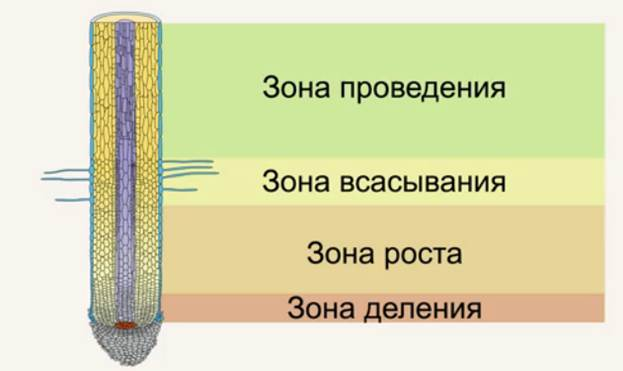
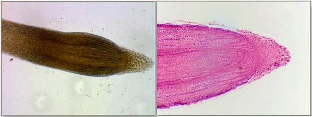
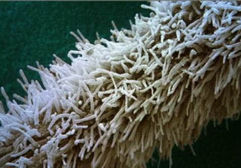
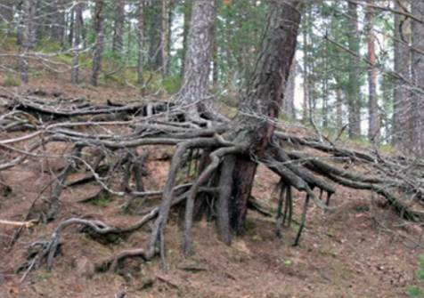
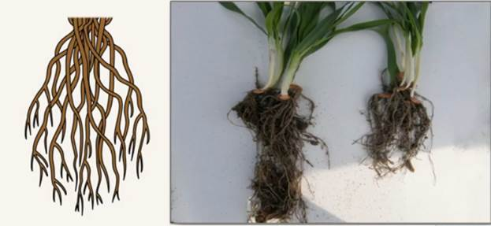

Корень
Корень – один из главных вегетативных органов покрытосеменных растений, у него несколько функций:
1. Всасывание, проведение воды и минеральных веществ. Минеральное питание растений – процесс усвоения солей из почвы.
2. Закрепление (заякоривание), удерживание растения в почве.
3. Синтез биологически активных веществ.
4. Запасание питательных веществ.
Строение корня
При рассмотрении мы видим, что корень неодинаков на своем протяжении. Он состоит из отдельных зон (рис. 1).

Рис. 1. Строение корня
Самая нижняя часть корня состоит из мелких и постоянно делящихся клеток – клеток образовательных тканей. Клетки эти очень нежные, и, чтобы они не повредились, они покрыты особым чехлом – корневым чехликом (рис. 2).

Рис. 2. Корневой чехлик
Это те же самые клетки, которые находятся в образовательной ткани, часть клеток делится и образует сам корень, а часть клеток при делении образует корневой чехлик. Во время роста клетки корневого чехлика погибают, а корень бурит почву, прорастая все ниже и образуя себе все новые клетки чехлика. Можно сказать, что это живой наперсток корня.
Клетки заканчивают делиться в зоне деления. В них соединяются вакуоли и начинается очень важный процесс быстрого роста. За короткое время клетки особым образом быстро вырастают более чем в двадцать раз – это зона роста. Далее идет зона всасывания, где реализуется одна из главных задач корня – всасывать воду и растворенные в ней соли. Для эффективности процесса корень в этой зоне покрывается тонкими волосками, то есть клетки наружного слоя образуют длинные выросты – корневые волоски, которые пронизывают почву и впитывают в себя почвенные растворы (рис. 3).

Рис. 3. Корневые волоски майорана
В этой зоне вода и минеральные соли всасываются, а в следующей поднимаются вверх к надземным частям – она называется зоной проведения. В зоне проведения образуются боковые корни, и корень закрепляется в почве, так реализуется вторая функция корня. Чем больше боковых корней, тем надежнее сам корень удерживается в почве. Корень достаточно быстро растет вниз, и все зоны вместе с ростом корня опускаются все ниже, оставаясь приблизительно одинакового размера, а зона проведения становится все длиннее, по мере роста корня. Многие видели узловатые одревесневшие корни сосны (рис. 4) – это и есть зона проведения.

Рис. 4. Одревесневшие корни сосны
Корневые системы
Корневая система формируется на протяжении всей жизни
растительного организма. Отличается она от стебля тем, что на корне никогда не
образуются листья и способность к ветвлению выражена у него гораздо сильнее.
Корневые системы у растений бывают двух видов: стержневые и мочковатые. Стержневая
корневая система (рис. 5) образуется, когда от главного
корня растения отходят в стороны боковые корни, ветвящиеся и образующие
множество тонких корней, которые приникают в почву в различных направлениях.
Это большинство двудольных растений, таких как горох, морковь. 
Рис. 5. Стержневая корневая система колокольчика рапунцель
Мочковатая корневая система (рис. 6) – это корни имеющие вид пучка, все корни примерно одинаковы по толщине и длине, их можно наблюдать у большинства однодольных растений, таких как пшеница, кукуруза, овес.

Рис. 6. Мочковатая корневая система пшеницы
Заключение
Мы рассмотрели корень, его функции, устройство и корневые системы. Выяснили, что корневые системы различаются: стержневая корневая система хорошо удерживает растение в почве и хорошо помещает питательные вещества про запас, а корневая система мочковатого типа очень плотно пронизывает почву и эффективно всасывает воду и минеральные вещества.
Список литературы
1. Пасечник В.В. Биология 6 класс. Бактерии, грибы, растения. – Дрофа, 2011.
2. Корчагина В.А. Биология 6-7 классы. Растения, бактерии, грибы, лишайники. – 1993.
3. Пономарева И.Н., Корнилова О.А., Кучменко В.С. Биология 6 класс. – 2008.
Дополнительные рекомендованные ссылки на ресурсы сети Интернет
1. Интернет портал «Биофайл» (Источник)
2. Интернет портал «Биоуроки» (Источник)
3. Интернет портал «Проект – Вся Биология» (Источник)
Домашнее задание
1. Назовите функции корня.
2. Каково строение корня?
3. Какие бывают корневые системы?